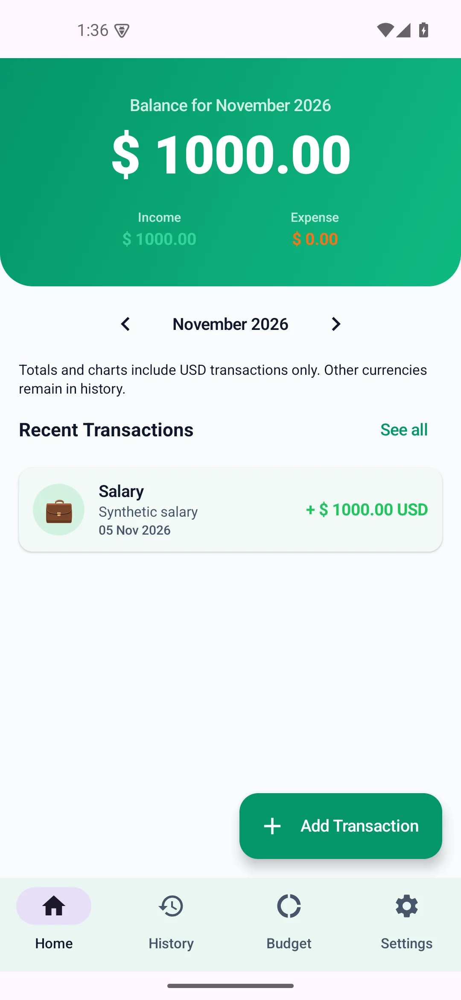

Expense Tracker
Track personal transactions, category budgets and recurring templates in a local ledger.

How it works
Room stores transactions, budgets and recurring templates. The browser demo uses sample records and resets on reload.
Verification and demo scope
The handoff documents Android build and emulator evidence. Bank connections and live exchange-rate requests are outside the browser demo.